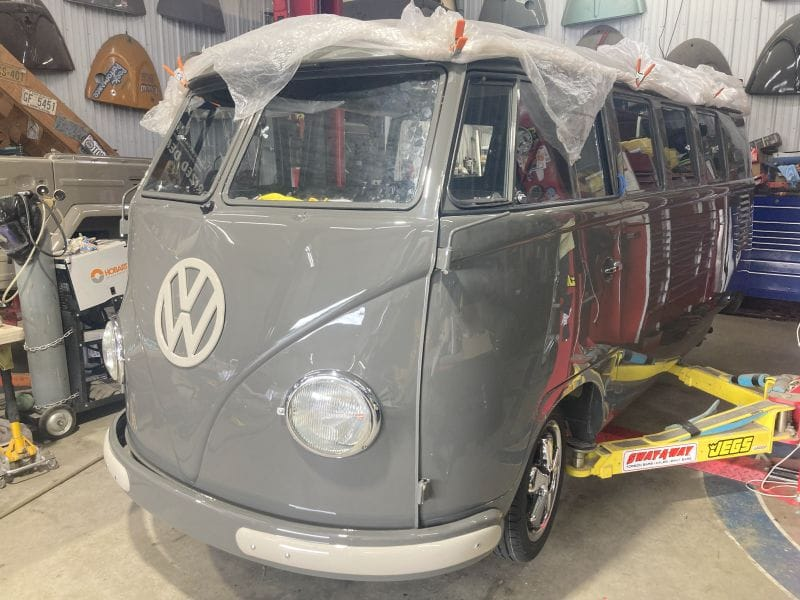
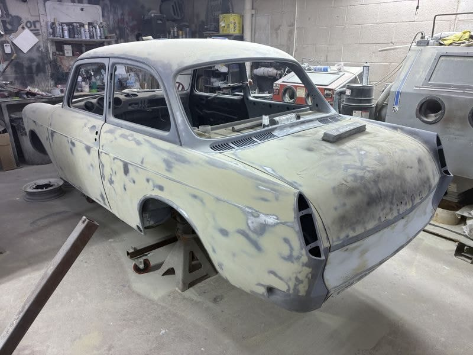

Fresh from the Shop
Latest Builds
Every car that rolls through our doors gets the same obsessive attention — whether it's a full concours restoration or a hot rod makeover.

Complete
Patrick's '56 Ambulance
A rare split-window ambulance brought back to stunning condition. One of the most unique builds we've ever had the pleasure of completing.

Newly Saved
'49 Standard
Freshly rescued and headed for a new life.

In Progress
Nathan & Kristi's '63 Notch
An Alaskan Notchback now in Maryland, getting a hot rod makeover.


Complete
Browse All Completed Restos
Decades of finished builds — find your favorite.